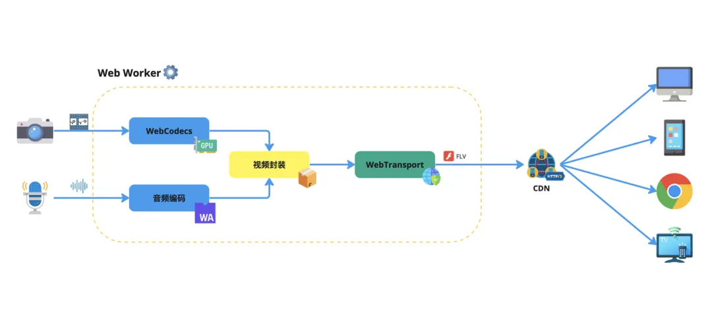

HaoTian · 2024-11-04 21:14:46
然而，随着 HTTP/3 的到来，WebTransport 作为一种新的 API，正逐渐成为 WebSocket 的有力竞争者。
本文将详细介绍 WebTransport，包括其优势、使用案例、代码示例，并与 WebSocket 进行对比。
WebTransport 是一种基于 HTTP/3 的 API，它提供了在 Web 客户端和服务器之间进行双向通信的机制。
与 WebSocket 不同，WebTransport 支持多路复用、流控制，并提供了端到端的加密。
WebTransport 利用 HTTP/3 的效率，特别是其基于 QUIC 的传输层。
QUIC 是一种基于 UDP 的传输协议，它减少了连接延迟，提供了更快的连接建立时间和更低的传输延迟。
WebTransport 允许在同一连接上并行发送多个消息，这减少了连接的开销，并提高了数据传输的效率。
WebTransport 提供了流控制机制，确保发送方不会过快地发送数据，从而避免接收方因处理能力不足而丢失数据。
WebTransport 提供了端到端的加密，增强了数据传输的安全性。
WebTransport 支持流式传输（可靠传输）和数据报传输（不可靠传输），适应不同的应用场景。
WebTransport 可以与 Web Workers 等现代 Web 技术集成，允许在后台线程中处理数据，提高了性能。
使用案例：云游戏需要快速传输游戏指令和视频流，以确保游戏的流畅性和响应性。
代码示例：
// 假设服务器支持 WebTransport
const transport = new WebTransport("wss://example.com/game");
// 打开一个双向流
const stream = await transport.createBidirectionalStream();
// 发送游戏指令
const writer = stream.writable.getWriter();
await writer.write(new TextEncoder().encode("Game command"));
// 接收游戏状态更新
const reader = stream.readable.getReader();
while (true) {
const { value, done } = await reader.read();
if (done) break;
const message = new TextDecoder().decode(value);
console.log("Game state update:", message);
}
使用案例：实时直播需要低延迟的视频流传输。
代码示例：
// 连接到直播服务器
const transport = new WebTransport("wss://example.com/live");
// 创建一个单向流用于接收视频流
const stream = await transport.createUnidirectionalStream();
// 接收视频数据
const reader = stream.readable.getReader();
while (true) {
const { value, done } = await reader.read();
if (done) break;
// 处理视频数据，例如解码并显示
handleVideoData(value);
}
WebTransport 作为一种新兴技术，提供了比 WebSocket 更多的优势，特别是在性能和多路复用方面。
随着浏览器和服务器对 HTTP/3 的支持逐渐增加，WebTransport 有望在未来的 Web 开发中扮演更重要的角色。
对于开发者来说，现在是时候开始关注和学习 WebTransport，以便在未来的项目中利用这一强大的技术。